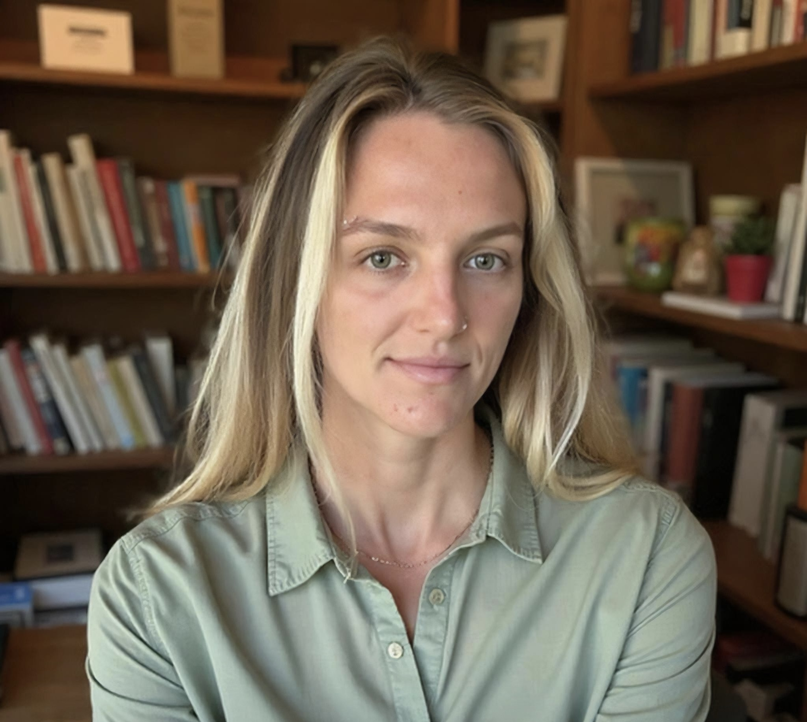

Independent AI consultant specializing in agentic systems, research tooling, and production AI infrastructure. Available for engagements across research, government, and industry sectors.
Design and implementation of multi-agent architectures, LLM orchestration pipelines, and autonomous research tooling.
Applied AI for scientific and academic research, including data pipelines, natural language interfaces, and domain-specific tooling.
AI-assisted geospatial analysis and GIS integration for intelligence, environmental, and infrastructure applications.
AI solution delivery in DoD and federal contexts, with emphasis on security, reliability, and mission requirements.
Anne Voigt is an AI Systems Engineer and independent consultant based in Southern California. Her background spans mathematics, data science, and engineering, providing a rigorous foundation for technically sound and practically deployable AI systems.
She has delivered AI solutions across the Department of Defense, academic research institutions, and geospatial intelligence sectors, with consistent emphasis on reliability, precision, and mission-critical requirements.
Accepting engagements in AI systems engineering, agentic workflows, research tooling, and geospatial AI across research, government, and industry sectors.